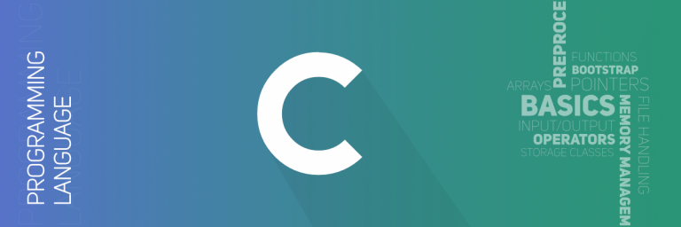

It is useful to create intresting webpages and also this domain have more jobs than compare to other domains
Web development refers to the building, creating, and maintaining of websites. It includes aspects such as web
design, web publishing, web programming, and database management. It is the creation of an application that works
over the internet i.e. websites.
C PROGRAMMING

DESCRIPTION :
C is a procedural programming language. It was initially developed by Dennis Ritchie as a system
programming language to write operating system. The main features of C language include low-level
access to memory, simple set of keywords, and clean style, these features make C language
suitable for system programming like operating system or compiler development.